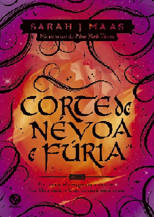
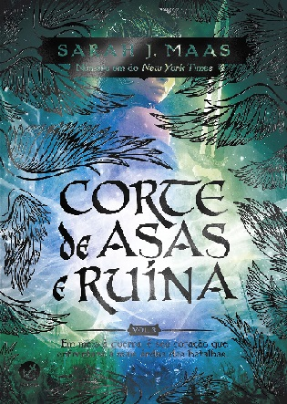
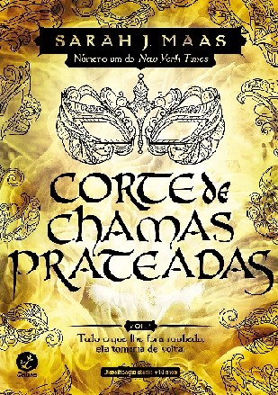
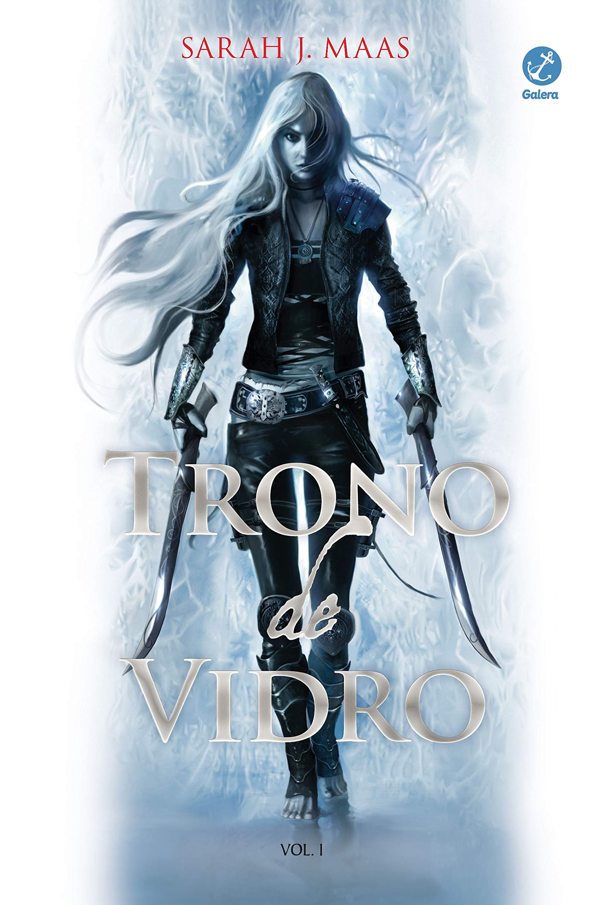

Acotar e Trono de Vidro
Num mundo dividido uma muralha mágica separa duas espécies. De um lado, os feéricos vivem dentro de suas fronteiras cheias de beleza e mistério; do outro, os humanos possuem apenas medo, desconfiança e dificuldades. Feyre, filha de um casal de mercadores humanos e falidos, se torna caçadora para sustentar a família.
A magia há muito abandonou Adarlan. Um perverso rei governa, punindo impiedosamente as minorias rebeldes. Aos 18 anos uma prisioneira está cumprindo sua sentença. Ela é uma assassina, e a melhor de Adarlan.

Corte de Espinhos e Rosas
Num mundo dividido uma muralha mágica separa duas espécies. De um lado, os feéricos vivem dentro de suas fronteiras cheias de beleza e mistério; do outro, os humanos possuem apenas medo, desconfiança e dificuldades. Feyre, filha de um casal de mercadores humanos e falidos, se torna caçadora para sustentar a família.

Corte de Névoa e Fúria
Feyre Archeron morreu Sob a Montanha. Nas garras de Amarantha, a jovem humana que ansiava por amor e proteção deixou de existir. Das cinzas de seu velho eu, Feyre Quebredora da Maldição foi Feita – com os poderes de sete Grão-Feéricos... e uma vontade tão férrea quanto o metal temido por eles.

Corte de Asas e Ruína
Em meio à Corte Primaveril, num perigoso jogo de intrigas e mentiras, a Grã-Senhora da Corte Noturna esconde seu laço de parceria e sua verdadeira lealdade. Tamlin está fazendo acordos com o invasor, Jurian recuperou suas forças e as rainhas humanas prometem se alinhar aos desejos de Hybern em troca de imortalidade.
Corte de Gelo e Estrelas
Divididos entre as tentativas de retomar suas vidas após a grande batalha, as responsabilidades de liderar a Corte Noturna e a preparação para o rigoroso inverno, o trabalho de Feyre, Rhys e seu Círculo Íntimo parece nunca ter fim.

Corte de Chamas Prateadas
Nesta Archeron sempre foi orgulhosa, rápida para a raiva e lenta para perdoar. Desde que foi forçada a entrar no Caldeirão e se tornar Grã-Feérica contra sua vontade, ela lutou para encontrar um lugar para si mesma dentro do estranho mundo que habita.

Trono de Vidro Livro 1
A magia há muito abandonou Adarlan. Um perverso rei governa de seu trono de vidro, punindo impiedosamente as minorias rebeldes, quando uma assassina chega ao castelo. Depois de cometer um erro e ser capturada, ela se torna prisioneira nas minas de sal de Endovier, onde a tortura prevalece e ninguém sobrevive.
H3 Item 1
A magia há muito abandonou Adarlan. Um perverso rei governa de seu trono de vidro, punindo impiedosamente as minorias rebeldes, quando uma assassina chega ao castelo. Depois de cometer um erro e ser capturada, ela se torna prisioneira nas minas de sal de Endovier, onde a tortura prevalece e ninguém sobrevive.
H3 Item 2
A magia há muito abandonou Adarlan. Um perverso rei governa de seu trono de vidro, punindo impiedosamente as minorias rebeldes, quando uma assassina chega ao castelo. Depois de cometer um erro e ser capturada, ela se torna prisioneira nas minas de sal de Endovier, onde a tortura prevalece e ninguém sobrevive.
H3 Item 3
A magia há muito abandonou Adarlan. Um perverso rei governa de seu trono de vidro, punindo impiedosamente as minorias rebeldes, quando uma assassina chega ao castelo. Depois de cometer um erro e ser capturada, ela se torna prisioneira nas minas de sal de Endovier, onde a tortura prevalece e ninguém sobrevive.